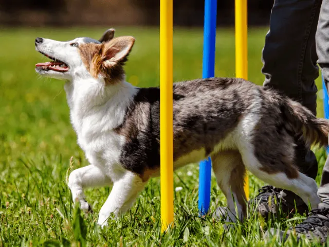
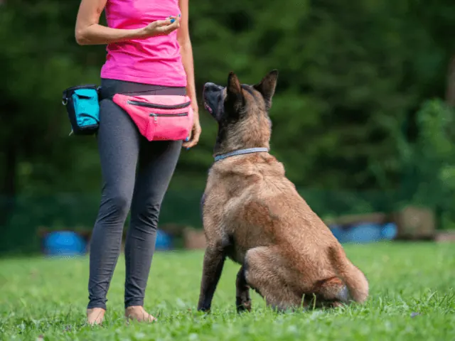
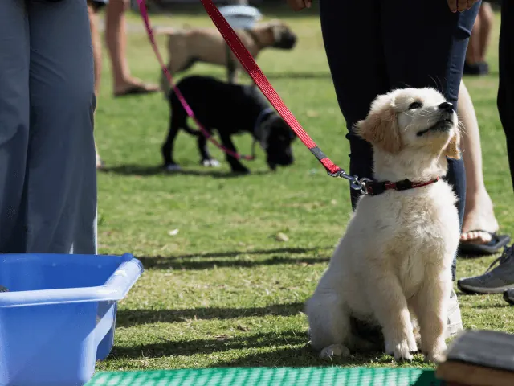
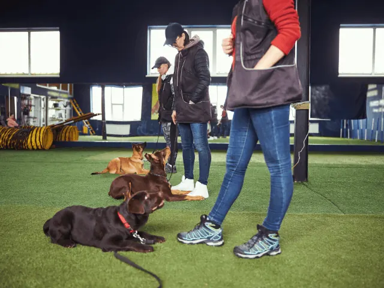

Puppy Cursus in Nijmegen: Train Je Hond!
Gepubliceerd op 6 december 2023, bijgewerkt op 7 november 2024
Onderdeel van de gids Cursussen in Nijmegen

Begin het Avontuur met je Puppy in Nijmegen: Ontdek de Beste Puppy Cursussen
Welkom in de wereld van puppy-opvoeding in Nijmegen, waar nieuwe hondenbezitters en hun jonge viervoeters samen een fundament leggen voor een gelukkige, gezonde relatie. Of je nu net een speelse pup in je leven hebt verwelkomd of van plan bent er een te krijgen, een puppycursus in Nijmegen is een uitstekende stap naar een harmonieuze toekomst samen.
In Nijmegen vind je een verscheidenheid aan puppycursussen die zijn ontworpen om aan de behoeften van jou en je nieuwe beste vriend te voldoen. Van basisgehoorzaamheid tot socialisatie, en van speelse trainingen tot aanpak van specifieke uitdagingen, deze cursussen bieden alles wat je nodig hebt om je puppy op het juiste pad te zetten.
Dit artikel neemt je mee op een reis door de beste puppycursussen in Nijmegen, waar je praktische tips, inzichten van experts en ervaringen van andere hondenbezitters zult ontdekken. Samen met je pup zal je leren, groeien en onvergetelijke momenten beleven. Laten we beginnen aan dit spannende nieuwe hoofdstuk in jullie leven!

Veelgestelde vragen over een puppy cursus in Nijmegen.
Wat is de beste leeftijd voor puppycursus?
Een puppycursus volgen in Nijmegen is een essentiële stap in de ontwikkeling van je nieuwe huisdier, maar wanneer is de beste tijd om te beginnen? Idealiter start je met een puppycursus als je puppy tussen de 8 en 12 weken oud is. Dit is vaak het moment waarop puppy’s hun moeder verlaten en een nieuw thuis vinden bij hun nieuwe eigenaren. In deze cruciale groeifase is het van groot belang dat je puppy blootgesteld wordt aan diverse nieuwe ervaringen. Een puppycursus in deze periode helpt bij het leggen van een solide basis voor toekomstig leren en socialiseren.
Heeft een puppycursus zin?
Het volgen van een puppycursus heeft absoluut zin en is zeer nuttig voor zowel de pup als de eigenaar. Een van de grootste voordelen is de socialisatie van je puppy. Tijdens de cursus ontmoet je pup een verscheidenheid aan andere hondenrassen, wat bijdraagt aan een bredere sociale ontwikkeling. Je puppy leert omgaan met de unieke kenmerken en gedragingen van verschillende rassen. Bovendien biedt een puppycursus de eigenaar waardevolle inzichten in het hondengedrag. Je krijgt praktische informatie en begeleiding over hoe je bepaalde gedragingen kunt interpreteren en hierop kunt reageren. Dit helpt bij het opbouwen van een sterkere band en beter begrip tussen jou en je pup.
Kan je een hond van 2 jaar nog trainen?
Absoluut, het is zeker mogelijk en zelfs aan te bevelen om een hond van 2 jaar of ouder nog te trainen. Volwassen honden hebben vaak het voordeel dat ze een langere aandachtsspanne hebben dan puppy’s, wat het trainingsproces kan vergemakkelijken. Ze zijn in staat om zich gedurende langere tijd op de training te concentreren, wat het aanleren van nieuwe commando’s en gedragingen effectiever maakt. Bovendien hebben volwassen honden vaak al een basisniveau van discipline en begrip van eenvoudige commando’s, wat als een solide basis dient voor verdere training. Kortom, het is nooit te laat om te beginnen met het trainen van je hond, ongeacht hun leeftijd.
Puppy Cursus in Nijmegen; waar kan je dit allemaal doen?
In Nijmegen zijn er diverse opties voor puppycursussen, ideaal voor de sociale en basisvaardigheden van je jonge hond. Van professionele hondenscholen tot kleinschalige, persoonlijke trainingen, Nijmegen biedt een breed scala aan keuzes. Deze cursussen zijn gericht op commandotraining, socialisatie en het leggen van een goede basis voor gehoorzaamheid. Zowel in groepsverband als individueel, afgestemd op de unieke behoeften van jouw pup, zijn deze cursussen perfect voor een goede start. Ontdek de beste puppycursussen in Nijmegen en geef je pup de perfecte start. Hieronder vind je een overzicht van een aantal bedrijven die een puppy cursus in Nijmegen geven.

Volg een puppy cursus bij HSV Rijk van Nijmegen
Bij HSV Rijk van Nijmegen in Nijmegen vind je een puppycursus die focust op een positieve en ontspannen manier van leren. Deze hondenschool streeft ernaar om een sterke band tussen jou en je puppy te vormen door middel van geduld en begrip. Zonder enige vorm van dwang, druk of correctie worden de pups aangemoedigd om op hun eigen tempo te groeien en te leren.
Na de puppycursus biedt HSV Rijk van Nijmegen een vervolgcursus aan: de Basis Cursus. Deze cursus bouwt voort op de vaardigheden die in de puppycursus zijn aangeleerd, met een focus op verdere ontwikkeling en training van basiscommando’s. Net als bij de puppycursus, wordt ook hier een positieve trainingsmethode gehanteerd, waarbij elke hond individueel wordt benaderd en de tijd krijgt die hij nodig heeft.
Deze cursussen zijn beschikbaar op verschillende dagen, zodat er altijd een moment is dat bij jouw schema past. Bij HSV Rijk van Nijmegen kun je rekenen op een leerzame en plezierige ervaring voor zowel jou als je hond. Ontdek hoe je door middel van positieve bekrachtiging een harmonieuze relatie met je hond kunt opbouwen en ontwikkelen.
Welkom bij Dog2School – De Positieve Hondenschool van Nijmegen
Bij Dog2School begrijpen we dat de eerste weken van een puppy thuis cruciaal zijn voor hun ontwikkeling en aanpassing. Daarom raden we aan om je nieuwe huisgenoot eerst enkele weken te laten wennen aan zijn nieuwe omgeving, familie en eventuele andere huisdieren. Na deze gewenningsperiode is het ideaal om te starten met onze puppycursus. Wij bieden ook de mogelijkheid voor begeleiding aan huis, zodat je pup in zijn vertrouwde omgeving kan blijven leren. Neem gerust contact met ons op als je vragen hebt of als je je direct wilt inschrijven.
Deelname en Kosten:
Onze puppycursus is bedoeld voor pups van 9 tot 16 weken oud en bestaat uit 8 lessen van ongeveer 45 minuten per les. De groepen zijn klein, met niet meer dan 5 combinaties, om persoonlijke aandacht en begeleiding te garanderen. Een cursusblok kost €160. Voor pups die de puppyfase ontgroeid zijn, bieden we puberlessen aan. Raadpleeg onze planning voor beschikbare data en tijden.
Aanvullende Trainingen bij Dog2School:
Naast de puppycursus bieden we bij Dog2School ook een reeks andere cursussen aan:
– Basiscursus: Voor honden die de basistechnieken van gehoorzaamheid leren.
– Beginnerscursus: Een vervolg op de puppycursus, waarbij de basisvaardigheden verder worden ontwikkeld.
– Gevorderdencursus: Voor honden die al een goede basis hebben en klaar zijn voor meer uitdagende oefeningen.
– Privélessen: Gepersonaliseerde training, afgestemd op de specifieke behoeften van jou en je hond.
Bij Dog2School staan we voor een positieve benadering van hondentraining, waarbij we de nadruk leggen op beloningen en aanmoediging. Ons doel is om een sterke en liefdevolle band tussen jou en je hond te bevorderen. Schrijf je nu in en ontdek de vreugde van het leren met je trouwe viervoeter!

Welkom bij de Puppycursus van KC Nijmegen
Bent u enthousiast over de komst van uw nieuwe pup? KC Nijmegen staat klaar om u en uw pup te verwelkomen in onze uitgebreide puppy cursus in Nijmegen. Hier leert u de beginselen van een gelukkige en gezonde relatie met uw nieuwe viervoeter. De cursus begint in de basis al wanneer je op zoek gaat naar een pup. Hieronder vind je een aantal tips vanuit KC Nijmegen waar je rekening mee kan houden.
Voorbereiding voor de Pup
– Bezoek de fokker vaak voor de komst van uw pup.
– Laat een speeltje of doekje bij de fokker achter voor de nestgeur.
– Zorg dat u essentiële benodigdheden in huis heeft, zoals een halsband, riem, speeltjes, voer, eet- en drinkbak, hondenkoekjes, en een comfortabele mand of kussen.
De Grote Dag: Pup Komt Thuis
– Onthoud dat het een grote verandering is voor de pup. Bied een warm welkom met de vertrouwde nestgeur en geef de pup de ruimte om zijn/haar nieuwe omgeving te verkennen.
– Begin direct met de basis van huisregels en gewoonten.
Onze Puppycursus
– We adviseren om uw pup eerst een week thuis te laten wennen voordat u met de cursus begint.
– De cursus behandelt de Black Box-methode en beantwoordt al uw vragen over het opvoeden van uw pup.
– De cursus duurt ongeveer 13 weken met lessen van 45 minuten, meestal op maandag- en woensdagavond.
– Breng lekkernijen, een speeltje en het entingsboekje van uw pup mee naar de eerste les.
– Ook bieden wij een verkorte versie aan in de vorm van de Puppy Summer School.
Bij KC Nijmegen wensen we u en uw pup veel leerplezier en een fantastische start samen. Schrijf u nu in voor onze puppycursus en zet de eerste stappen in een lang en gelukkig leven samen!
Versterk de Band met Jouw Hond bij Hondenclub Kwispel
Ontdek de vreugde van het samen trainen bij Hondenclub Kwispel. Of je nu een speelse pup hebt of een volwassen hond die nieuwe trucs kan leren, wij bieden een breed scala aan trainingen en cursussen. Onze ervaren instructeurs zijn gespecialiseerd in alles van puppycursussen tot gehoorzaamheidstraining en behendigheid.
Bij Hondenclub Kwispel geloven we in een positieve, beloningsgerichte aanpak. Wij zetten ons in om de relatie tussen jou en je hond te versterken, en bieden daarom activiteiten aan die zowel leuk als leerzaam zijn, zoals gezamenlijke wandelingen en spelletjesdagen.
Interesse in wat Hondenclub Kwispel jou en je trouwe viervoeter kan bieden? Neem contact met ons op of bezoek een van onze trainingssessies. We ontvangen jou en je hond graag!

Volg een puppy cursus bij Fides Hondentraining
Fides Hondentraining, gevestigd nabij Wijchen en Oss, biedt een verfrissende en ontspannen benadering voor puppytraining. Ons doel is niet alleen het leren van commando’s, maar ook het opbouwen van een sterke, gezonde relatie tussen jou en je pup. We hanteren een welzijnsgerichte en positieve trainingsmethode, gebaseerd op de nieuwste inzichten in hondengedrag.
Bij Fides begrijpen we dat elke hond uniek is. Daarom is onze training gericht op het begrijpen van het specifieke gedrag van jouw pup. We helpen je inzicht te krijgen in het waarom achter bepaald gedrag, zodat jij effectief kunt reageren en jouw pup op een positieve manier kunt begeleiden.
Onze puppycursus gaat verder dan de standaard training. We leren je hoe je jouw pup op een respectvolle manier grenzen kunt stellen, zonder gebruik te maken van pijn, angst of intimidatie. Dit zorgt voor een stevige en vertrouwensvolle basis in jullie relatie.
Naast de puppycursus, bieden we ook cursussen voor puberende honden en een ‘Samen Verder’-cursus aan, en desgewenst privétrainingen op onze locatie of bij je thuis. Zo kan je de training kiezen die het beste aansluit bij de behoeften van jou en je hond. Met Fides Hondentraining bouw je aan een harmonieuze en begripvolle band met je trouwe viervoeter.
Conclusie Puppy cursus in Nijmegen
De wereld van puppy-opvoeding in Nijmegen is rijk en divers, waarbij elke cursus is gericht op het versterken van de band tussen jou en je nieuwe viervoeter. Deze cursussen bieden een uitgebreide kennismaking met essentiële vaardigheden, van basisgehoorzaamheid tot socialisatie en interactieve trainingen. Door deel te nemen aan een puppycursus in Nijmegen, leg je een solide basis voor een gelukkig en gezond samenzijn met je pup. Met professionele begeleiding en een scala aan trainingsopties, is Nijmegen een fantastische plek voor elke nieuwe hondenbezitter om te starten op het pad van puppy-opvoeding. Elke cursus belooft een boeiende, leerzame ervaring te zijn, vol inzichten en onvergetelijke momenten met je trouwe viervoeter. Klik hier als je op zoek bent naar een andere cursus in Nijmegen.